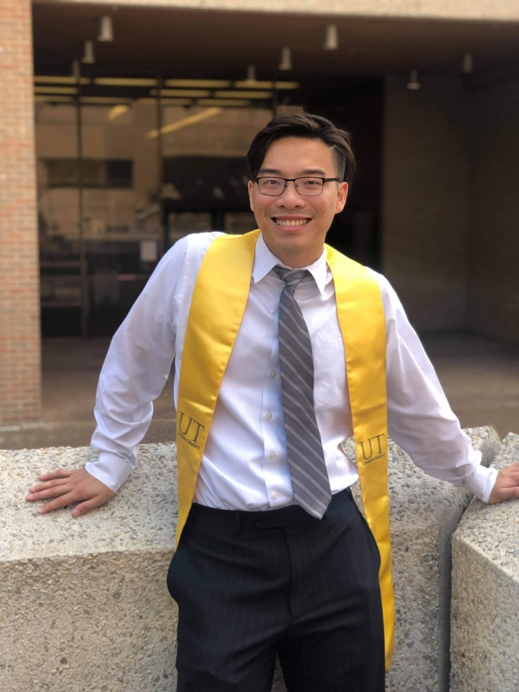

Yu Leon Liu
yuleonliu*at*math.harvard.edu
Hi! I am a second-year Harvard math graduate student. My advisor is Mike Hopkins.
Before grad school, I did my undergraduate at UT Austin with Dan Freed.
Research Interests
My primary research interest is (mathematical) physics, mostly field theories and anomalies.
Mathematically, I am also interested in knot homologies and homotopy theory.
Besides math and physics, I am also interested in CS (DevOps, kubernetes, type theory and functional programming
languages).
Paper and Preprints
- Abelian dualiy in topological field theory: accepted to Comm. Math. Phys..
For an extended version, see my senior thesis
.
- Constructing the Virasoro groups from differential cohomology:
Joint work with Arun Debray and Christoph Weis.
- Braided Monoidal Infinity 2 category from Soergel Bimodules: Upcoming. joint work with Aaron Mazel-Gee,
David Reutter, Catharina Stroppel, and Paul Wedrich. See Catharina's ICM for motivation and introduction.
Aaron gave a talk here, and here's the slides.
- We construct a braided monoidal (\infty, 2) category whose endormorphisms categories are type A Soergel bimodules with their canonical
braid group action.
Talks slides and Posters
Quick links
Seminars
CS projects
-
Aplite. A purely functional statically-typed lightweight programming language with emphasis on
composibility and run-time guarantees by type-checking.
-
Kubernetes Opeator in Aplite. A Kubernetes "client library" for Aplite. Really a Kubernetes operator
run as a pod
in the cluster with a server that communicates with the local Aplite server. Currently written in Python.
- Arend documentation of HoTT. This is an ongoing project
to code/verify all the theorems in Homotopy Type Theory: an Univalent Foundation
in Arend, which a formal verification system that uses homotopy type theory (it assumes the univalence
axiom).